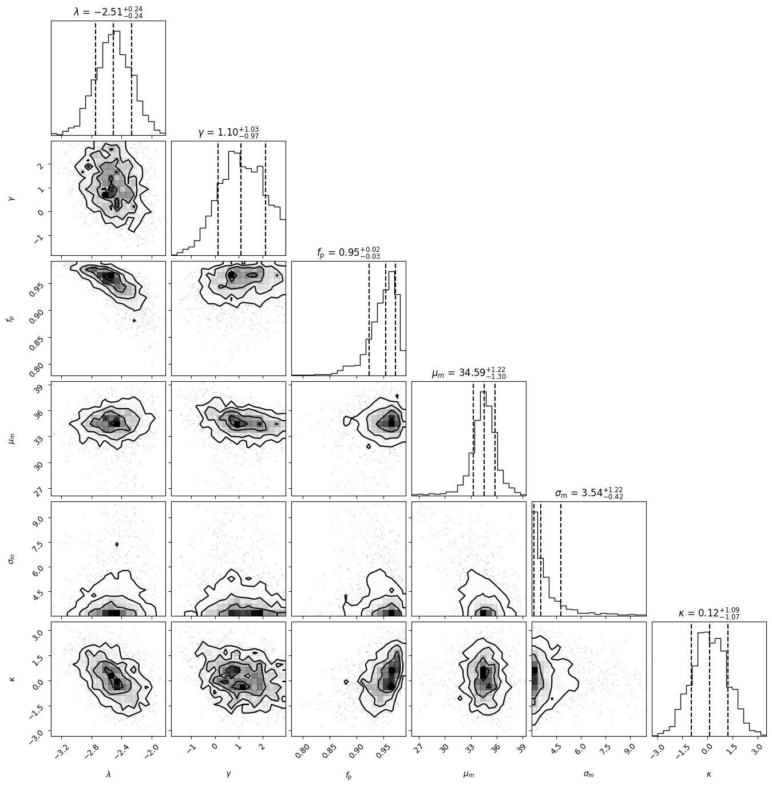

Inferring the Distribution of Gravitational Waves
Here we will get the distribution of gravitational wave events in our universe by performing Hierarchical Bayesian Analysis. Here we will reproduce a simpler version of the population analysis done by the LIGO/VIRGO Collaboration in this paper
Hierarchical Likelihood Inference
[100]:
import numpy as np
import pandas as pd
import json
import jax.numpy as jnp
with open(f"./event_posterior_samples.json", "r") as f:
event_samples = {k:pd.DataFrame(v) for k,v in json.load(f).items()}
eventnames = []
posteriors = []
for event, posterior in event_samples.items():
eventnames.append(event)
posteriors.append(posterior)
[63]:
with open(f"./selection_function_samples.json", "r") as f:
selection_samples = pd.DataFrame(json.load(f))
indices = np.random.randint(0, high=8000, size=2000)
selections_jaxed = {col: jnp.array(selection_samples[col][indices]) for col in selection_samples.columns if col not in ['waveform_name', 'name']}
[64]:
posteriors_jaxed = [{col: jnp.array(post[col][indices]) for col in post.columns if col not in ['waveform_name']} for post in posteriors]
Population Model Recap
We use individual event likelihoods to infer the hierarchical model.
\[\begin{equation}
p(\Lambda \mid d) \propto p(\Lambda)\prod_i^N \mathcal{L}\left(d_i \mid \Lambda\right)
\end{equation}\]
where
\[\begin{equation}
\mathcal{L}\left(d_i \mid \Lambda\right) \propto \int \frac{p\left(\theta \mid d_i\right) p(\theta \mid \Lambda)}{p(\theta)} d \theta \approx
\left\langle \frac{p(\theta \mid \Lambda)}{p(\theta)} \right\rangle_{\sim p\left(\theta \mid d_i\right)}
\end{equation}\]
We will “recycle” these posteriors and get the result for the following population model:
[66]:
## Mass model
def power_law(x, L, a, b):
normalization = (L + 1) / (jnp.power(b, L+1) - jnp.power(a, L+1))
return jnp.power(x,L) * normalization
def trunc_normal_pdf(x, mu, sig, a, b):
a_std, b_std = (a - mu) / sig, (b - mu) / sig
return jax.scipy.stats.truncnorm.pdf(x, a_std, b_std, loc=mu, scale=sig)
[67]:
class MassModel:
def __init__(self, m_min, m_max):
self.m_min = m_min
self.m_max = m_max
def pdf(self, data, params):
p_m_power_law = power_law(data['mass_1_source'], params['lambda'], self.m_min, self.m_max)
p_m_peak = trunc_normal_pdf(data['mass_1_source'], params['mu_m'], params['sigma_m'], self.m_min, self.m_max)
p_q = power_law(data['mass_ratio'], params['gamma'], self.m_min/data['mass_1_source'], 1.0)
p_m = params['fp'] * p_m_power_law + (1 - params['fp']) * p_m_peak
return p_m*p_q
def __call__(self, data, params):
return self.pdf(data, params)
[68]:
class Redshift:
def __init__(self, z_max):
from astropy.cosmology import Planck15
self.z = jnp.linspace(0,z_max,300)
self.y = Planck15.differential_comoving_volume(self.z).value * 4 * np.pi
self.kappas = jnp.linspace(-10,10,3000)
self._kappa_norms = None
def dVdz(self, z):
return jnp.interp(z, self.z, self.y)
def normalization_func(self, z, kappa):
return (1 + z)**(kappa - 1) * self.dVdz(z)
@property
def kappa_norms(self):
if self._kappa_norms is None:
self._normalize()
return self._kappa_norms
def _normalize(self):
self._kappa_norms = jnp.array([jax.scipy.integrate.trapezoid(self.normalization_func(self.z, float(self.kappas[i])), self.z) for i in range(len(self.kappas))])
def normalization(self, kappa):
return jnp.interp(kappa, self.kappas, self.kappa_norms)
def __call__(self, data, params):
un_normalized = self.dVdz(data['redshift']) * ((1 + data['redshift']) ** (params["kappa"]-1))
return un_normalized#/self.normalization(params['kappa'])
[69]:
R = Redshift(3.0)
M = MassModel(2.0, 100.0)
[96]:
class CustomLikelihood:
def __init__(self, all_posteriors, selections, domain_changer=None):
self.all_posteriors = all_posteriors
self.posts = {key: jnp.stack([post[key] for post in self.all_posteriors]) for key in ['mass_1_source', 'mass_ratio', 'redshift', 'prior']};
self.selections = selections
self.domain_changer = domain_changer
self.N_events = len(self.all_posteriors)
def logpdf(self, x):
event_likelihoods = jnp.sum( jax.scipy.special.logsumexp( (jnp.log(M(self.posts,x)) + jnp.log(R(self.posts,x)) - jnp.log(self.posts["prior"])) , axis=1) )
selection_effects = -self.N_events * jax.scipy.special.logsumexp( jnp.log(M(self.selections, x)) + jnp.log(R(self.selections, x)) - jnp.log(self.selections["prior"]) )
return event_likelihoods + selection_effects
[97]:
from bayesian_inference import NUTS, MHSampler
import jax
limits = {'lambda' : [-5,2], "gamma": [-3,3], 'fp':[0,1], 'mu_m':[10,50], 'sigma_m':[3,10], 'kappa':[-10,10]}
initial_point = {'lambda' : -2.35, "gamma": 1.1, 'fp':0.1, 'mu_m':33.0, 'sigma_m':4.0, 'kappa':2.9}
[98]:
CL = CustomLikelihood(posteriors_jaxed, selections_jaxed)
[74]:
N = NUTS(CL, initial_point, limits=limits)
[75]:
result = N.run(2000)
Running the inference for 2000 samples
[76]:
df = pd.DataFrame(result)
[79]:
import corner
figure = corner.corner(
df.values,
labels=[
r"$\lambda$",
r"$\gamma$",
r"$f_p$",
r"$\mu_m$",
r"$\sigma_m$",
r"$\kappa$",
],
quantiles=[0.16, 0.5, 0.84],
show_titles=True,
title_kwargs={"fontsize": 12},
)
